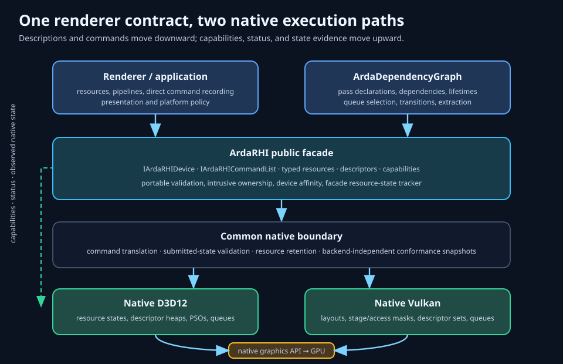
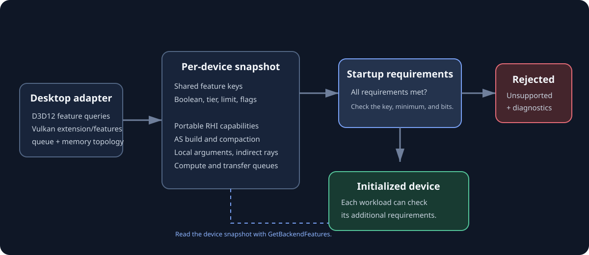
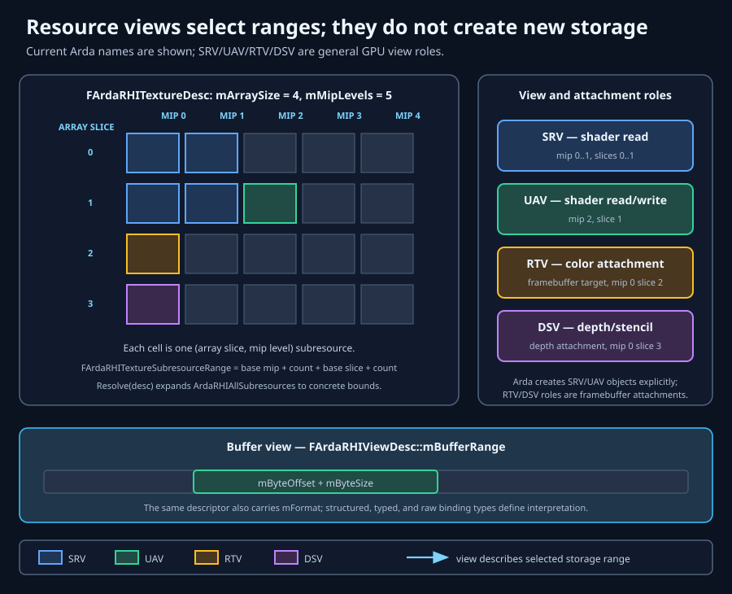
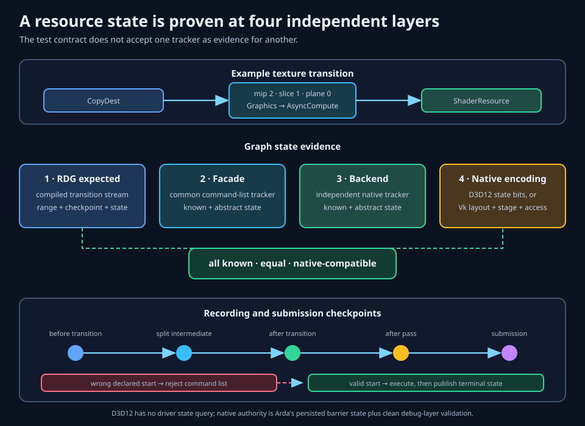
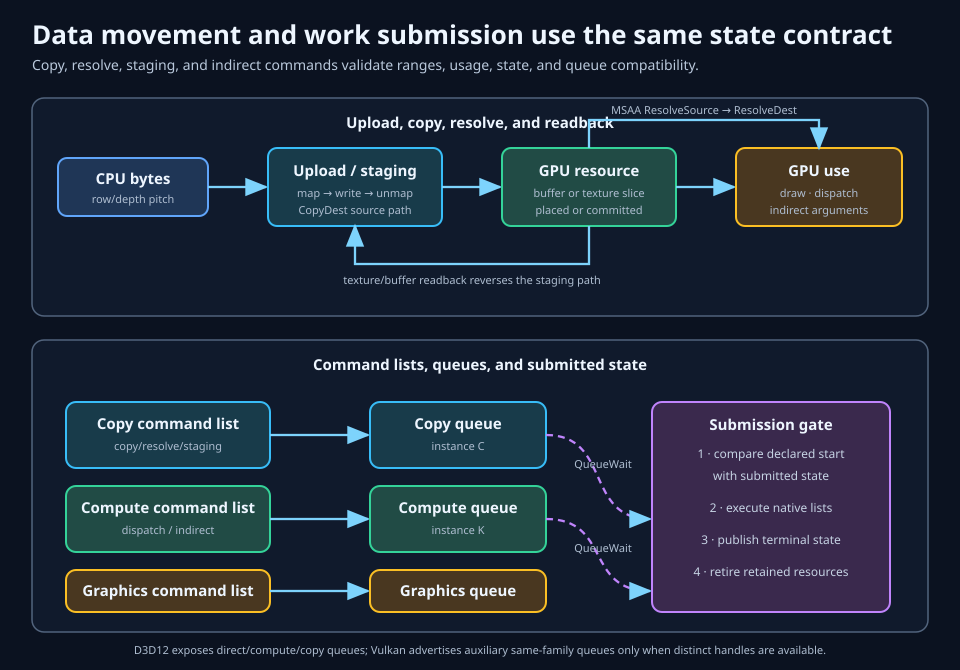
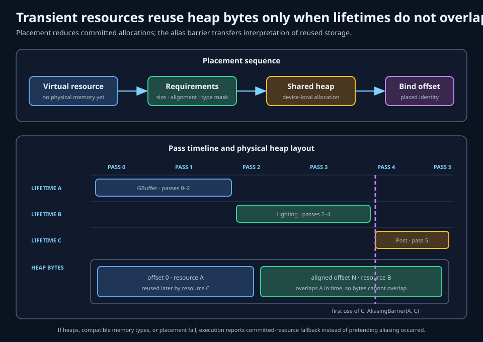
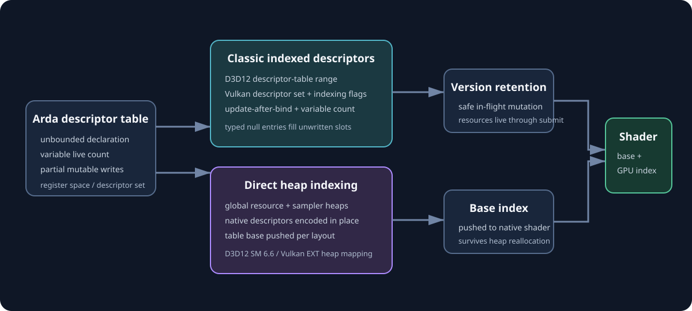
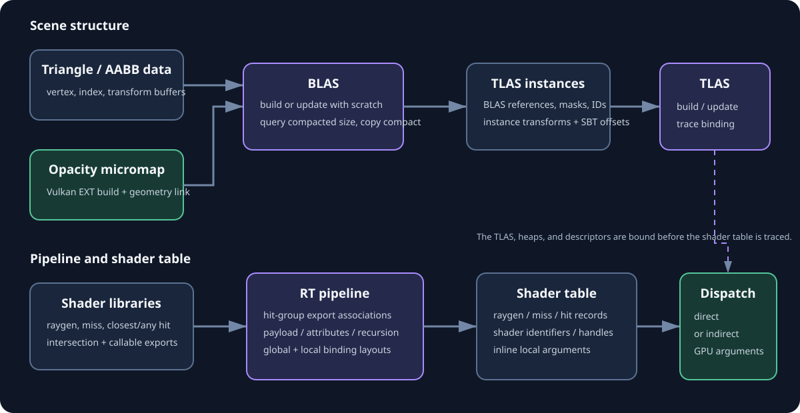
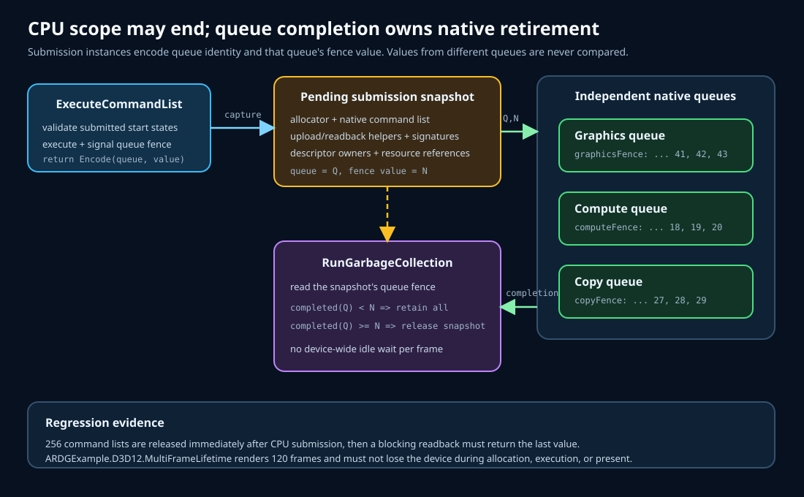
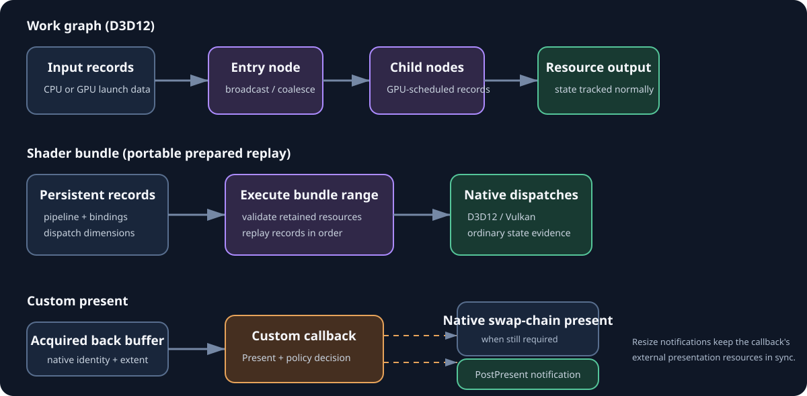

ArdaRHI feature guide
This chapter explains every major ArdaRHI feature, how renderer intent reaches D3D12 or Vulkan, what the render graph adds, and where the current abstraction deliberately stops. It describes the implementation after the Unreal RHI/RDG parity work, not an aspirational interface.
Learning objectives
- separate renderer and render-graph policy from the portable RHI contract and native D3D12/Vulkan execution;
- choose resource, view, transfer, heap, binding, pipeline, queue, and synchronization features from truthful device capabilities;
- explain how a resource transition is tracked and validated independently by RDG, the facade, the backend, and the native encoding;
- reason about staging pitch, indirect arguments, placed-resource lifetime, alias barriers, and descriptor-table retention;
- identify the supported graphics, compute, mesh, ray-generation, queue, presentation, and interop slices on each backend; and
- distinguish tested implementation from declarations that remain capability-gated or partial relative to Unreal RHI.
The capability recipes cover every predicate in the native conformance matrix, with exact admission checks and executable examples. The CUDA chapter covers the separate device, resource and operand-variant checks for mixed graphics/CUDA work.
How to read support status
Feature declarations are not treated as proof of native support. This guide uses the same strict labels as the Unreal parity audit:
Executable end to end
The public facade reaches a native backend, the capability is truthful, and a non-interactive execution test exercises the path.
Portable contract, conditional execution
The interface exists, but callers must inspect FArdaRHICapabilities. Unsupported devices return a recoverable Unsupported status.
Useful bounded subset
The implemented contract is real, but narrower than Unreal or the underlying native API. The missing semantics are named explicitly.
Layers and capabilities
ArdaBackend selects and owns a backend module. IArdaRHIDevice is the stable renderer-facing factory and submission authority; IArdaRHICommandList records portable work. The common native boundary validates descriptors, ownership, device affinity, command-list state, and submitted resource state before dispatching to D3D12 or Vulkan.

Device capabilities
FArdaRHICapabilities advertises queue topology, synchronization, heaps, staging, copies/resolves, indirect commands, aliasing, descriptor models, queries, pipeline caches, mesh shaders, ray tracing, sampler feedback, sparse residency, opacity micromaps, work graphs, shader bundles, custom present, and the exact limits needed to size native objects. Nested capability groups keep related facts together instead of reducing an advanced family to one misleading Boolean.
Capabilities answer whether the selected backend and physical adapter can execute a feature. They do not replace descriptor validation: a supported feature can still reject an invalid format, range, queue, shader combination, or foreign-device object.
Status and device affinity
Fallible operations return FArdaRHIStatus or TArdaRHIResult<T>. Invalid arguments, unsupported features, wrong-device objects, invalid command state, and native backend failures remain distinguishable. Every composite object must be built from resources owned by the same device.
Feature requirements
Backend initialization probes every selected device and checks mRequiredFeatures. Each requirement supplies a shared key, a minimum value (default 1), required flag bits (default 0) and an optional upper bound. For example, config.mRequiredFeatures = {{ "shader.float16" }}; requires half-precision shader arithmetic regardless of which provider is selected. Initialization rejects any selected device that fails a requirement.
Use GetBackendFeatures() to inspect the initialized default device and GetBackendFeatures(deviceIndex) to inspect another configured device. On the returned snapshot, GetEntries enumerates reported keys, Find distinguishes a reported zero from a missing key, and Supports checks the threshold and bits. Feature names use lowercase dot-separated components such as shader.mesh and ray-tracing.pipeline.
const auto features = arda::GetBackendFeatures();
const bool supportsMeshShaders = features && features->Supports("shader.mesh");Operation keys such as shader.mesh and ray-tracing.pipeline describe what the initialized device can use. Vulkan hardware support still requires the provider to enable the feature on the logical device and expose the operation. Providers also publish translated facts and limits under stable Arda names. Startup, graph attachment and CheckFeatureSupport check the same device snapshot.
For a device you already hold, call GetFeatures directly. GetLimits supplies resource dimensions and alignments, and IsQueueSupported checks which scheduling queues are available.

Resources, views, and ownership
Buffers are linear byte-addressable allocations described by byte size, structured stride, typed format, usage, CPU access, initial state, and optional virtual placement. They back vertex and index data, constants, structured data, indirect arguments, uploads, and readback.
Textures add dimension, width, height, depth, array size, mip count, sample count, format, usage, clear value, initial state, and virtual or tiled intent. The abstraction covers 1D, 2D, 3D, array, cube, and multisampled shapes. A texture subresource is identified by mip, array slice, and format plane.
Uniform buffers package constant data with the buffer object that stores it. Texture references provide stable indirection: a reference object can be retained while its target texture changes.
Views, samplers, and framebuffers
A resource owns storage; a view selects and interprets part of that storage. FArdaRHIViewDesc carries a format plus a texture subresource range or buffer byte range. SRVs authorize shader reads and UAVs authorize shader reads/writes. Samplers define filtering and addressing independently of texture storage. A framebuffer groups color and depth/stencil texture attachments for raster output.

Ownership and native import
RHI objects use intrusive references. Binding sets, descriptor-table versions, framebuffers, command lists, and submitted work retain the resources needed by their native operations. Imported D3D12 or Vulkan textures and buffers declare native type, truthful portable description, initial state, and borrowed or transferred ownership. A shared lifetime token can keep host or plugin state alive for a borrowed import.
Implemented: committed, placed, reserved, and sparse textures/buffers; uniform buffers; texture references; SRV/UAV objects; samplers; framebuffers; staging textures; borrowed native D3D12/Vulkan imports; and mutable resource collections. A collection owns a validated group of buffers, textures, samplers, or acceleration structures and can optionally allocate a directly indexed descriptor span.
Resource states and transitions
A resource state names the legal use of storage at a point in command order. Arda distinguishes common, constant, vertex, index, indirect-argument, pixel and non-pixel shader reads, UAV access, render target, depth read/write, copy source/destination, resolve source/destination, present, acceleration-structure roles, CPU read, discard, opacity-micromap roles, and shading-rate source. Compatible read-only flags can be combined.
Subresource and plane tracking
Textures are tracked over concrete mip, array, and plane ranges. Depth is plane zero and stencil is plane one for split depth/stencil formats. A transition of one mip or plane does not silently change its siblings. Buffer transitions apply to whole resources, while views may still select byte ranges for binding and copy validation.
Explicit transition descriptors
FArdaRHITextureTransitionDesc and FArdaRHIBufferTransitionDesc declare the expected state before, state after, source pipeline domains, destination pipeline domains, and optional begin-only, end-only, or discard semantics. A wrong mStateBefore is rejected instead of being repaired silently. Begin-only and end-only calls model a split transition and must pair correctly.
FArdaRHITextureTransitionDesc transition;
transition.mSubresources = mipAndPlaneRange;
transition.mStateBefore = EArdaRHIResourceState::CopyDest;
transition.mStateAfter = EArdaRHIResourceState::ShaderResource;
transition.mSourcePipelines = EArdaRHIPipeline::Copy;
transition.mDestinationPipelines = EArdaRHIPipeline::Graphics;
status = commandList.TransitionTexture(texture, transition);Automatic barriers, UAV ordering, and aliasing
Automatic tracking can infer ordinary transitions for command families that know their required states. Explicit tracking is available when scheduling needs exact before/after or pipeline semantics. UAV barriers order unordered writes without changing state. Aliasing barriers transfer the physical bytes of a heap range from one resource identity to another.
Four-layer conformance
The facade tracker and native backend tracker are independent. A FArdaRHIResourceStateSnapshot contains facade state, backend abstract state, and the exact native encoding. ArdaDependencyGraph adds its compiled expected state. Tests compare all four at every transition and pass checkpoint.

D3D12 does not expose a driver query for current resource state; the native authority is the exact D3D12_RESOURCE_STATES value persisted for emitted barriers plus a clean debug-layer result. Vulkan snapshots persist VkImageLayout, synchronization2 stage/access masks, and the selected queue family plus clean validation output.
Copy, resolve, staging, and indirect work
Buffer movement includes direct writes, synchronous and asynchronous host-to-device and device-to-host transfers, and buffer-to-buffer range copies. The RHI validates offsets, sizes, CPU access, usage, and required copy states.
Texture copy moves a region between matching or otherwise backend-compatible texture slices. FArdaRHITextureSlice names origin, extent, mip, array slice, and plane. Resolve converts one multisampled subresource into a compatible single-sample destination. It requires explicit ResolveSource and ResolveDest states.
Staging textures expose CPU-visible row and depth pitch. Upload maps writable staging storage, copies it into a texture, and unmaps it; readback copies a texture into readable staging storage before mapping. Callers must honor the returned pitch rather than assuming tightly packed texels.
Indirect commands let the GPU supply draw, indexed-draw, compute-dispatch, or ray-dispatch arguments from a buffer in IndirectArgument state. Arda validates command-specific structure size, buffer range, usage, queue support, and facade/backend/native state agreement before recording the native call. Ray dispatch has one portable three-uint32_t width/height/depth ABI: Vulkan consumes it directly, while D3D12 combines it on the GPU with the bound shader-table address ranges to form D3D12_DISPATCH_RAYS_DESC. Callers never manufacture backend-specific shader-table GPU addresses.

Implemented on D3D12 and Vulkan: texture region copy, multisample resolve, staging upload/readback, draw indirect, indexed draw indirect, and dispatch indirect. Multi-draw/count variants and the full Unreal format-conversion/reallocation surface are not yet implemented.
Heaps, aliasing, and residency
Committed resources let the backend choose and own an allocation per resource. Explicit heaps separate storage reservation from resource creation. A virtual texture or buffer is created without bound physical memory; the device reports size, alignment, and compatible native memory types. The caller creates an upload, readback, or device-local heap and binds the resource at a correctly aligned offset.
auto requirements = device.GetTextureMemoryRequirements(virtualTexture);
FArdaRHIHeapDesc heapDesc;
heapDesc.mCapacity = requirements.mValue.mSize;
heapDesc.mMemoryTypeBits = requirements.mValue.mMemoryTypeBits;
auto heap = device.CreateHeap(heapDesc);
status = device.BindTextureMemory(virtualTexture, heap.mValue, 0);ArdaDependencyGraph uses this contract for transient device-local resources. It computes live intervals, intersects Vulkan memory-type masks, places simultaneously live resources at non-overlapping offsets, and reuses bytes for non-overlapping lifetimes. The first use of a replacement resource emits an aliasing barrier.

If heap creation, memory-type compatibility, or placement fails, graph execution records committed-resource fallback. It never reports aliasing unless a native heap was used and an alias event was actually emitted.
Sparse and tiled residency
A reserved or sparse resource owns a virtual address range without committing every tile. GetTextureTiling exposes native tile shape and per-subresource layout. UpdateTextureTileMappings and UpdateBufferTileMappings map or unmap heap ranges, while CommitReservedResource provides a simpler prefix-commit policy. D3D12 lowers this to reserved resources and tile mappings; Vulkan lowers it to sparse resources and queue sparse binding.
QueryStreamingBudget reports local/non-local budget, usage, availability, and reservation. SetStreamingBudgetReservation requests a reservation where the native API supports it. Budget numbers are advisory snapshots: streaming code must continue to handle allocation or residency failure.
Implemented and capability-gated on D3D12 and Vulkan: memory requirements, heaps, placed resources, alias barriers, RDG transient placement, reserved/sparse buffers and 2D textures, tile mapping/unmapping, prefix commit, streaming-budget queries/reservations, and resource collections. The native conformance path commits a sparse buffer prefix, writes 0x51A25EED, copies it through a native readback resource, checks CopySource state agreement, and compares the CPU result before decommitting it. The same workload writes and reads mapped 2D and 3D texture regions, including distinct depth slices, and verifies that two aliased sparse buffers see the same bytes. Native support details remain governed by mResidency.
Descriptor indexing and direct heaps
A binding layout is an immutable schema: slot, register space or Vulkan descriptor set, descriptor type, array shape, and shader-stage visibility. A binding set populates the schema with buffers, textures, acceleration structures, and samplers. Layout compatibility, object ownership, usage flags, and view ranges are validated before native binding.
FArdaRHIBindlessLayoutDesc additionally controls table class, maximum capacity, register space, update-after-bind, variable descriptor count, unbounded declaration, and direct-heap indexing. Tables can resize, accept partial writes, and use typed null descriptors for unwritten entries. Each submitted table version retains the resources used by that version, so later host updates cannot invalidate in-flight work.
auto layout = device.CreateBindlessLayout(layoutDesc);
auto table = device.CreateDescriptorTable(layout.mValue);
device.ResizeDescriptorTable(table.mValue, 1024, true);
device.WriteDescriptorTable(table.mValue, textureItem);
Classic descriptor indexing
D3D12 allocates shader-visible descriptor ranges. Vulkan enables descriptor-indexing feature bits and uses update-after-bind pools/layouts plus variable-count allocation when requested. “Unbounded” means the shader ABI has an unsized array; allocation still has a finite, capability-reported live capacity.
Descriptor buffers
Vulkan's mbDescriptorBuffer selects VK_EXT_descriptor_buffer storage explicitly. Arda encodes native descriptors into mapped buffers and binds their device addresses and set offsets. Every layout in the pipeline must select this mode, each register space must be distinct, and native resource/sampler binding limits apply. It is mutually exclusive with direct heap indexing. GPU tests execute buffer writes and texture sampling through independent resource and sampler descriptor buffers.
Direct descriptor-heap indexing
D3D12 uses Shader Model 6.6 heap indexing. Vulkan uses VK_EXT_descriptor_heap: the backend creates native resource and sampler heaps, encodes descriptors directly into mapped heap memory, supplies heap-source mappings to every pipeline stage, binds both heaps on the command list, and pushes the selected table base index. Resource and sampler heaps are independent, and multi-layout register spaces remain distinct. Typed layouts use the limit of their descriptor kind. D3D12 allocates 1,024 physical sampler entries because 2,048 entries corrupt feedback LOD writes on NVIDIA 610.62 in both Arda and a standalone native reproduction. Its reported logical maximum is 512, leaving space for an old and replacement table version. Applications must query the limit rather than hard-code it.
A GetDescriptorTable call exposes the collection's existing GPU table; a host-only collection returns an empty handle. Collection writes update that table, so applications do not maintain a second descriptor list. Command lists capture the bound table version and retain referenced wrappers through submission. Updating or resizing a table preserves already recorded work.
Implemented and execution-tested on D3D12 and Vulkan where advertised: conventional sets, mutable bindless tables, unbounded declarations, update-after-bind, variable counts, direct resource/sampler heap indexing, acceleration-structure descriptors, and directly indexed resource collections. Unsupported extension/feature combinations return Unsupported.
Shaders and pipeline families
The shader system resolves registered modules and permutations into backend-specific artifacts. D3D12 consumes DXIL and Vulkan consumes SPIR-V. Stage identity covers conventional raster stages, compute, amplification/task, mesh, ray-tracing libraries, and D3D12 work-graph libraries. Shader libraries expose named exports without leaking native pipeline objects through the RHI.
Graphics pipeline
FArdaRHIGraphicsPipelineDesc combines input layout; vertex, hull, domain, geometry, and pixel shaders; binding layouts; topology; blend, raster, and depth/stencil state; color and depth formats; and sample count. The framebuffer, viewport/scissor, vertex/index buffers, and binding sets remain command state. Target formats and sample count must match the framebuffer before drawing.
Compute pipeline
FArdaRHIComputePipelineDesc combines one compute shader with binding layouts. FArdaRHIComputeState binds the pipeline and sets before direct or indirect dispatch. Compute work may execute on a compute queue or on graphics when the algorithm and capabilities permit.
Mesh pipeline
FArdaRHIMeshletPipelineDesc replaces vertex input with optional amplification/task and required mesh stages. D3D12 creates a pipeline-state stream and calls DispatchMesh; Vulkan creates an VK_EXT_mesh_shader pipeline and calls vkCmdDrawMeshTasksEXT. Creation and dispatch are advertised only when the adapter exposes the required tier or extension/features.
Ray-tracing pipeline family
FArdaRHIRayTracingPipelineDesc combines shader-library exports, hit groups, payload and attribute limits, recursion depth, global layouts, and export-associated local layouts. The next section covers its scene and dispatch lifecycle.
Pipeline caches
The renderer-facing pipeline-state cache hashes semantic descriptors, performs thread-safe same-key creation, and retains bounded LRU entries. Optional persistent native caches store backend data across runs. D3D12 uses a pipeline library and Vulkan uses VkPipelineCache; invalid persisted data is an optimization miss, never a reason to reject an otherwise valid descriptor. Persistent keys include immutable bindless layout semantics, including descriptor-buffer and direct-heap selection, so layouts with different native ABIs cannot reuse the same key. The conformance workload creates the native cache file, restarts the backend, and verifies compute output again.
Ray tracing and opacity micromaps
The acceleration-structure contract covers triangle and procedural AABB BLAS geometry, TLAS instances, scratch/storage size queries, build, update, compacted-size query, compact-copy, and state snapshots. Update requires compatible source/destination descriptions and build flags. Compaction creates a smaller immutable copy after the native size query; it is not an in-place resize.
Ray-tracing pipelines support ray-generation, miss, closest-hit, any-hit, intersection, and callable exports. Hit groups associate the appropriate exports. Shader-table records select an export and append validated local arguments matching that export's local layout. Direct dispatch supplies dimensions on the CPU; indirect dispatch reads the portable three-dimension record from a GPU buffer in IndirectArgument state.

D3D12 and Vulkan lowering
D3D12 uses DXR state objects, root-signature associations, shader identifiers, acceleration-structure build/copy commands, and direct or indirect ray dispatch. Vulkan enables the acceleration-structure, ray-tracing-pipeline, ray-query, deferred-host-operations, buffer-device-address, and required SPIR-V extension chain; it builds native structures, creates shader groups, obtains group handles, and traces with strided device-address regions.
Both record APIs accept binding sets or descriptor tables. Vulkan local descriptor tables require VK_EXT_descriptor_heap and direct-heap layouts; mixed classic/global sets are rejected. When local descriptor bindings are present, Vulkan reserves the first four local-record bytes for the table base index and appends application argument bytes after it; an explicit shader-record declaration combining both must account for that prefix. Argument-only records have no such prefix. D3D12 emits local root descriptor handles followed by the application arguments. Local table retention and raw local-argument routing are verified separately by GPU readback.
BuildTopLevelAccelStructFromBuffer reads native 64-byte instance records from a GPU buffer; its instance count is supplied by the CPU. This does not imply indirect-count TLAS builds, which both providers report as unavailable. A zero mMaxRayPayloadSize means there is no queryable native payload limit; it does not disable ray-tracing pipelines.
Opacity micromaps
On Vulkan adapters with VK_EXT_opacity_micromap, FArdaRHIOpacityMicromapDesc describes microtriangle opacity input and usage counts. Build consumes input and scratch buffers; a compaction-enabled build exposes a destination-size query and native compact copy; and geometry can attach either the built or compacted micromap to a BLAS later in the same list. If a desktop driver advertises compact copy but rejects the optional compacted-size query-pool type, Arda returns the legal conservative source-storage size and still executes VK_COPY_MICROMAP_MODE_COMPACT_EXT. The conformance test uses an opaque two-state microtriangle, compacts it, builds BLAS and TLAS objects, traces one hit and one miss, and reads back 0x0C105E57 and 0x0000B055. State queries verify facade, common-backend, and native lifecycle state at each boundary. D3D12 reports this Vulkan-specific feature unsupported.
Every subfeature has a separate ability bit. Explicit renderer requirements can include hardware RT cores, indirect dispatch, local bindings, and other capabilities that vary independently.
Command lists, queues, and synchronization
A command list follows Open → record → Close → submit. Reset makes a completed list reusable. Lists are created for graphics, compute, or copy queues and reject commands outside their queue's legal family.
Submission returns a monotonically increasing instance for that queue. Same-queue order is implicit. QueueWait connects a consumer queue to a producer instance with a native GPU-side fence or timeline-semaphore dependency; the submitting CPU does not wait for device idle. Event queries and GPU fences expose completion to the CPU, timer queries measure GPU intervals, and markers annotate native captures.
Owned D3D12 devices create direct, compute, and copy queues. Vulkan selects dedicated compute and transfer families when the physical device provides them, otherwise it uses legal shared-family fallbacks. Commands crossing Vulkan families emit release/acquire synchronization and update the tracked queue-family owner. Sparse binds and ordinary submissions participate in the same timeline ordering.
Before native submission, Arda compares every command list's declared starting resource states with the device's submitted states. Only successful execution publishes terminal states. This closes the gap between locally valid recording and globally stale command lists.
D3D12 in-flight retirement
Each D3D12 queue owns an independent fence sequence. The opaque submission instance encodes its queue plus that queue's fence value, so compute or copy completion cannot falsely retire work from another queue. Submission snapshots retain the command allocator, command list, upload/readback helpers, command signatures, descriptor owners, and referenced native resources. Garbage collection releases a snapshot only after its own queue fence reaches the recorded value.

Persistent dependency graph integration
FArdaDependencyGraph holds typed nodes and resource values across frames. Register implementations in FArdaNodeRegistry, then author operations only through an FArdaGraphEdit scope.
ArdaInductor resolves resource and explicit dependencies independently of attachment order, removes dead branches, creates pipelines from stage declarations, coalesces CUDA nodes, assigns queues, and plans reusable physical storage. Its search can optimize execution cost or memory under a configured VRAM budget.
Submit returns a frame ticket; Wait retires that frame and publishes readbacks. Execute combines both. Independent frame slots own transient storage, while imported resources and retained adapter allocations remain shared.
FArdaDependencyExecutionContext resolves declared resources and compiler-assigned pipeline slots. FArdaGraphExecuteOptions controls resource-state validation. FArdaGraphExecutionResult records accepted submissions, queue waits, state checkpoints, and completion identities. The compile result reports scheduling and memory decisions.
All graphics, CUDA, copy, and acceleration-structure graph work uses this system. Direct RHI commands remain available for applications managing their own dependencies.
Sampler feedback and streaming
D3D12 sampler feedback pairs a sampled texture with a native feedback map. The texture may be committed or tiled. The map records minimum-mip or mip-region usage through a sampler-feedback UAV. DecodeSamplerFeedbackTexture decodes every mip and array slice into an ordinary R8UInt texture. The destination must match the paired array size, have one mip for minimum-mip feedback or the paired mip count for mip-region feedback, and be large enough for every feedback region; mip-region destinations may require padding. The conformance shaders request mip 2, verify the sampled mip's known color, and read back the decoded feedback: value 2 for minimum-mip feedback, or 0xFF at mip 2 for a used region. Unwritten regions decode to 0xFF for minimum-mip and zero for mip-region usage. Minimum dimensions are ceil(paired extent / region extent); mip-region output may be padded to the paired width and height to support its complete mip chain. Clear-to-write ordering is protected by a UAV barrier.
A typical loop is: sample the sparse texture, resolve feedback, delay until the result is complete, prioritize missing tiles within the reported streaming budget, map new heap tiles, and retire cold tiles only after their last queue use. Feedback is evidence for a residency policy; it does not automatically make memory resident.
Vulkan has no equivalent native feature in this contract and reports sampler feedback unsupported. Its sparse-residency path remains usable with application-generated demand information.
Work graphs and shader bundles
Work graphs are capability-gated D3D12 programs compiled as Shader Model 6.8 libraries. The pipeline identifies a graph program and entry node; dispatch initializes the backing memory when required and supplies CPU or GPU input records. Node shaders can schedule further records without returning scheduling decisions to the CPU. Work-graph buffers still use ordinary RHI resource states and diagnostics.
Shader bundles are portable persistent execution records. A bundle retains validated compute pipeline/binding state and dispatch dimensions; a command list can execute a selected record range repeatedly on D3D12 or Vulkan. This reduces repeated facade setup and keeps lifetime validation explicit. It is not advertised as native Vulkan device-generated commands.

Queries, diagnostics, caches, and lifetime
Event queries signal a queue point and can be polled, waited, or reset. GPU fences provide the same one-signal-at-a-time completion facade for ownership retirement. Timer queries bracket command-list work and report elapsed seconds when ready. Callers must query mbQueries and handle asynchronous readiness.
Markers place named regions into backend diagnostics. Native D3D12 debug-layer and Vulkan validation messages flow through the configured diagnostic callback. Portable status messages preserve the failed descriptor or command context where possible.
Descriptor caches expose statistics and a trim operation. Pipeline cache persistence is flushed and disabled during backend shutdown before global context ownership is released. Garbage collection retires deferred native objects only after their queue work completes. D3D12 uses per-queue fences and retained submission snapshots; Vulkan retains each command recording beside its native submission fence. WaitForIdle is a correctness and teardown tool, not a routine frame synchronization primitive.
Presentation and external interop
The swap-chain layer owns platform surface integration, frame acquisition, back-buffer access, submission preparation, present, and resize/recreation. Renderable presentation images still use ordinary RHI states: acquire exposes a back buffer, rendering transitions it to RenderTarget, and presentation requires Present.
IArdaCustomPresent can replace or augment the final swap-chain operation. It receives the native back-buffer identity and dimensions, is notified on resize, chooses whether native present is still required, and receives PostPresent after the selected route succeeds. D3D12 and Vulkan implement the callback contract; the native D3D12 test uses a real hidden Win32 swap chain and verifies callback, bypass, post-present, and resize behavior.
Native D3D12 and Vulkan window surfaces use a fixed BGRA8 UNorm contract. HDR metadata, color-space negotiation, broad display-mode policy, and Unreal-style viewport pacing remain outside this desktop renderer contract.
External-device providers can adopt host-owned devices and queues. External-resource providers resolve stable application IDs into truthful texture or buffer import descriptors. Device affinity, native type, ownership, initial state, and host lifetime remain explicit; interop does not infer or repair an incomplete native contract.
Backend support summary
The following summary is intentionally prose-based so qualifications stay beside each capability.
- D3D12 and Vulkan
- Core resources/views; graphics, compute, mesh, and ray-tracing pipelines where the adapter supports them; AS build/update/compaction; hit groups, local shader-table arguments, direct/indirect ray dispatch; conventional and indexed descriptors; direct resource/sampler heap indexing where supported; copies/resolves/staging; heaps/aliasing/sparse residency/budgets; shader bundles; GPU cross-queue waits; native import; custom present; pipeline caches; and RDG state conformance.
- D3D12-specific implemented slice
- DXR state objects and indirect ray dispatch, Shader Model 6.6 direct descriptor heaps, native sampler feedback, reserved resources/tile mappings, mesh pipeline-state streams, Shader Model 6.8 work graphs, and a tested Win32 custom-present swap chain.
- Vulkan-specific implemented slice
VK_KHR_acceleration_structure/VK_KHR_ray_tracing_pipeline,VK_EXT_mesh_shader,VK_EXT_opacity_micromap, descriptor indexing andVK_EXT_descriptor_heap, sparse binding, dedicated-family selection, timeline-semaphore waits, queue-family ownership transfer, synchronization2 state evidence, native memory-type intersection, and a tested Win32 custom-present swap chain.- Portable fallback behavior
- Unsupported queues fall back only where RDG policy permits. Heap placement reports committed fallback. Platform-specific advanced features return
Unsupported. Initialization diagnostics name unmet feature requirements.
Desktop scope and deliberate limits
Arda follows Unreal's separation of facade, native RHI, and render graph, but it is not trying to reproduce every Unreal platform or raster-era policy. The supported platform breadth is 64-bit desktop D3D12 and desktop Vulkan. Console, mobile, and Metal backends are intentionally out of scope.
- raster pipelines serve tools, presentation, compatibility, and mesh-feature validation. A ray tracer can declare its own RT and ML requirements;
- D3D12-only features such as sampler feedback and work graphs are not emulated on Vulkan, while Vulkan opacity micromaps are not claimed on D3D12;
- shader bundles are portable prepared record replay, not a claim of native Vulkan device-generated commands;
- HDR/display-mode policy, multi-GPU topology, Unreal's render-pass/subpass breadth, multi-draw/count variants, and its full validation/replay ecosystem are not part of the current contract; and
- an adapter can meet startup requirements while lacking an operation needed by a later RT module. Check the requirements for each workload on its execution device.
The engineering order and Unreal source references are maintained in the Unreal RHI/RDG parity review.
Native conformance test contract
The parity suite validates behavior rather than interface presence. It compares RDG expectation, facade state, common-backend state, and exact native encoding. It covers transitions and planes; copy/resolve/staging; indirect work; heap aliasing; classic and direct descriptor indexing; mesh and ray dispatch; AS build/update/compaction; Vulkan opacity micromaps; sparse residency and budgets; dedicated queues, GPU waits, and ownership; sampler feedback; work graphs; shader bundles; custom present; RDG culling/recording/extraction; and transient placement.
Known-result GPU tests include bindless/direct-heap compute, shader bundles, work graphs, mesh pixels, BLAS/TLAS hit and miss routing, local shader-table record packing, indirect rays, compacted opacity-micromap traversal, sparse-buffer commit/readback, and decoded sampler feedback. A D3D12 lifetime unit test immediately releases 256 submitted command lists and still reads the final GPU value; ARDGExample.D3D12.MultiFrameLifetime renders 120 hidden frames to catch frame-to-frame retirement regressions. Admission tests cover missing keys, insufficient values, and required bits.
ctest --test-dir build-state-parity --output-on-failure -j 1 -E "^(RHITest|ARDGExample)\."Validation requested by configuration is mandatory: missing or unloadable layers return ValidationUnavailable. Test builds attempt local provisioning first, then skip only validation-dependent tests when that result persists. Other initialization errors remain test failures; see validation setup. On Windows, ARDA_D3D12_GPU_VALIDATION=1 additionally enables GPU-based D3D12 validation when validation is requested. Set VK_LAYER_PATH to a validation-layer installation matching the Vulkan headers when the default loader cannot find it. Staging mappings expose row and depth pitches; advance depth slices by the returned depth pitch, including format/block padding.
The capability matrix checks every public capability field against the source header. A newly advertised feature without a native workload fails the suite. Arithmetic probes execute subgroup sums, native FP16 arithmetic, and packed signed/unsigned INT8 dot products. Descriptor updates, collection edits, shader-library execution, local descriptor records, sparse texture contents, and integer clears all check GPU output. Conservative rasterization and variable-rate shading have no portable execution controls and remain unavailable in both providers.
Capability-dependent tests skip only when the selected adapter truthfully reports the feature unavailable. A supported feature must create native objects, execute native work, validate output or lifecycle evidence, and produce no D3D12 debug-layer or Vulkan validation error. Interactive windowed examples are excluded from the non-interactive suite.
Summary
ArdaRHI now exposes a desktop RT/ML-first D3D12/Vulkan core: explicit resources and state, texture data movement, heaps/aliasing/sparse residency, resource collections, advanced descriptor indexing, mesh and ray pipelines, full AS lifecycle, shader tables and indirect tracing, platform-native sampler feedback or opacity micromaps, GPU queue synchronization, work graphs, shader bundles, custom present, external interop, and RDG scheduling. Correctness remains observable: every capability is probed, every unsupported requirement is traceable, and state-sensitive tests compare facade, common backend, RDG expectation, and exact native encoding.
Further reading
- RHI resources and memory — descriptor details, formats, views, ownership, and a worked resource example.
- Commands — recording state, hazards, synchronization, and direct/RDG execution.
- Shaders and pipeline states — artifact identity, layouts, PSO compatibility, and caches.
- ArdaDependencyGraph documentation — graph concepts, passes, resources, compilation, execution, and debugging.
- Unreal RHI/RDG parity review — audited comparison, implementation status, test contract, and prioritized backlog.
- DirectX Raytracing, Sampler Feedback, and Work Graphs — Microsoft native behavior used by the D3D12 backend.
- Vulkan specification — synchronization2, descriptor indexing/heaps, sparse binding, mesh shading, ray tracing, and opacity micromap contracts used by the Vulkan backend.